Previous Unicode Officers and Staff
Listed below are all the individuals who
have been on the staff of the Unicode Consortium as well as part of
its executive team since
its incorporation in 1991.
Also see
the current
Unicode officers and staff .
|
|
|
Glenn Adams,
1993 to 1998
Technical Vice President Emeritus
Dr. Glenn Adams received a BA in Mathematics, from the University of California, Santa Cruz in 1978,
a MA in Classics, from the University of California at Berkeley in 1980, and his Ph.D. in Linguistics
from Harvard University. He is currently the
President of Extensible Formatting Systems,
Inc. Dr. Adams has previously held the position of Research Associate at the MIT Artificial Intelligence Laboratory, and as a
Technical Staff Member at MIT Lincoln Laboratory. Prior to his studies, Mr. Adams served in the U.S.
Armed Forces in Southeast Asia where he began his studies of Asian languages. He speaks Vietnamese and Chinese, and is working
on Thai, Tagalog, and Burmese. |
|
|
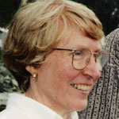 |
Joan Aliprand,
1991 to 2007
Secretary Emerita
Ms. Joan Aliprand has been an international advocate for the use of Unicode in libraries since 1993. She had a leading role
in revision of the MARC 21 specifications for library data to utilize Unicode. She also served on an American Library Association
task force on access to library resources in languages other than English. Joan’s education includes a B.Sc. in Botany from
the University of Sydney, a Diploma in Librarianship from the University of New South Wales, and coursework at the
Graduate Library School of the University of Chicago. She has worked as a cataloger at Macquarie University and the
University of Chicago, as a library analyst at the University of California at Berkeley, and as a senior analyst at RLG.
Ms. Aliprand was made Technical Director in 1993,
and was then appointed Secretary of the Unicode
Consortium from January 1994 until December 2006
when she decided to retire. |
|
|
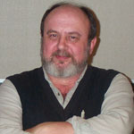 |
Joe Becker, 1991 to 1998
Technical Vice President Emeritus
Dr. Joseph Becker was Principal Scientist at Xerox Document Management Systems Division,
having previously managed the Workstation Software International Group. He earned a BS in Mathematics
from the Massachusetts Institute of Technology in 1966, and a Ph.D. in Computer Science from
Stanford University in 1970. After joining Xerox PARC in 1977, he led efforts to bring Chinese,
Japanese, Korean, Russian, Arabic, Hebrew, Hindi, and other language capabilities to the
Xerox Star/Viewpoint/GlobalView series of office system products.
He is one of the founders of the Unicode Standard effort. His Erdős number is 2. |
|
|
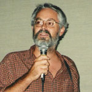 |
Lee Collins, 1991
to 1993
Technical Vice President Emeritus
Dr. Lee Collins is currently "Manager, OS Engineering
Asia" at Apple Computer, Inc. He received a BA in Oriental Languages
from the University of California, Berkeley in 1974, an MA in East Asian Languages from Columbia
University in 1978, and has studied at the Tokyo Inter-University Center for Japanese Language
Studies in 1978, the Tokyo University Department of Chinese Literature in 1979, and in the
University of California Political Science Ph.D. program in 1980. In 1982, Mr. Collins became
Senior Researcher at the International Energy Forum in Tokyo. A self-taught programmer, he joined
Xerox Corporation in 1984 to develop his long-standing interest in multilingual software by working
on Chinese and Korean versions of the Xerox STAR and 6085. Mr. Collins joined Apple Computer, Inc.
in 1988 where he contributed to the Unicode
Standard as a member of Apple's "Pink" project. Mr. Collins is one of the original
founders of the Unicode Standard. |
|
|
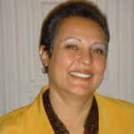 |
Magda Danish,
1999 to 2011
Sr Administrative Director
EmeritaMagda Danish joined the Unicode Consortium in April 1999 and
managed the Unicode office until December 2011. She handled all aspects of office
work including administration, bookkeeping, meeting coordination, website
maintenance, membership relations, and customer support. When needed, she loved
to lend a helping hand to the often overworked Unicode editorial committee.
Magda graduated from the "Université de Paris VII - Jussieu" in Paris with a
degree in computer science (Maîtrise d' Informatique). She was born in Cairo,
Egypt and speaks Arabic and French fluently. |
|
|
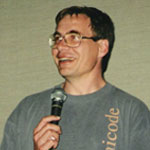 |
Asmus Freytag,
1991 to 2007
Technical Vice President Emeritus
Dr. Asmus Freytag is President of ASMUS, Inc., a Seattle-based company specializing in consulting services and seminars
on software globalization and implementing the Unicode standard to companies world-wide. Prior to his current work, he was
at Microsoft, among other responsibilities as internationalization architect for the first version of Windows NT and as
globalization evangelist. He has also written several articles on character sets and internationalization for Microsoft Systems
Journal. He has been a member of the Unicode Technical Committee working group since early 1990 and was a Unicode Technical Director
from 1991 to June 1992 at which time he was elected Unicode’s Vice President of Marketing. Dr. Freytag is also a member of ASCENT’s
Board of Directors since 1995. He holds Ph.D. and MS degrees in Physics from the University of Illinois. |
|
|
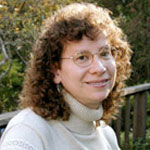 |
Deborah Goldsmith 2004 to
2006
Technical Director - CLDR Vice-Chair Emerita
Deborah Goldsmith is a software engineer within the International and Text department at Apple, and is Apple's
liaison to the Unicode Consortium, the Unicode Technical Committee, and the CLDR Technical Committee (of which she
was vice chair).
She has worked at Apple since 1986 on object-oriented applications frameworks and operating systems, the Mac OS toolbox, fonts,
and international support. Part of that time was spent at Taligent, the Apple/IBM joint venture, where she was one of the system
architects. |
|
|
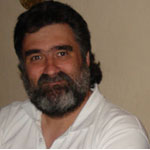 |
John Jenkins
2000
to 2012
Technical Director Emeritus
John Jenkins is a Senior Software Engineer at Apple Inc., where his main responsibilities are to maintain and extend
Apple's fonts and font editing tools. John has been involved in standardization for nearly two decades. He has been particularly
involved in the standardization of East Asian ideographs and currently acts as Unicode's liaison to the Ideographic Rapporteur Group
(IRG). He first became interested in the computer representation of East Asian languages after spending two years as a missionary
for The Church of Jesus Christ of Latter-day Saints in Hong Kong. John doesn't dislike dogs, but he's definitely a cat person. |
|
|
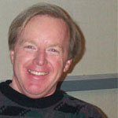 |
Mike Kernaghan 1991 to 2011
Vice President & Treasurer Emeritus
Mr. Michael Kernaghan started working
on the Unicode Standard in January of 1989 and
became its first Vice President when the Unicode
Consortium was incorporated in 1991. Later in 1996,
he also took on the role of treasurer. Michael works
at Microsoft Corporation in the Graphics Products
Unit as a senior engineer, internationalizing their
software for Windows and the Macintosh. He joined
the Macintosh development group in 1997 as a lead
developer in Text and I18N. He has a BS in Computer
Science and Statistics from Cal Poly San Luis Obispo
in 1974. He worked at Control Data Corporation for
five years providing real-time operating systems for
large main-frame customers. In 1979, he moved to
Diablo Systems performing 8080 programming on
desktop PCs. After two years, he joined the Xerox
team producing the STAR Workstation, first as
programmer, and later on as a manager of a number of
its desktop applications. In 1988, Mike was hired as
the manager of Multilingual Development at Metaphor
to address the need to change Metaphor products to
be offered in the international market place. |
|
|
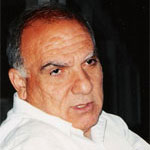 |
Mike Ksar 2004
to 2012
Technical Director Emeritus
Mike Ksar has been working in the IT industry for over 45 years. He is currently a Unicode Technical Director.
He worked for Microsoft for more than five years in the Corporate Standards Strategy team and later as a senior program manager
in the Globalization Infrastructure and Font Technology (GIFT) team. Before joining Microsoft, Mike worked at HP for more than
24 years. In his last assignment at HP, he was the Corporate Globalization Manager. He spent about 18 years in the area of
internationalization programs and processes in R&D at HP product divisions and in the field, five years of which at HP in Geneva,
Switzerland managing the development of localized products for Arabic, Hebrew, Greek, Turkish, Portuguese and languages of
Eastern Europe.
Mike has been the Convener of the ISO technical working group (JTC1/SC2/WG2) that developed and published ISO/IEC 10646 since
April 1990. He served 6 years as member of the Unicode Consortium Board of Directors. He is very active in both the Unicode
Technical Committee (UTC) as well as the Unicode Editorial Committee. He was a key player towards the merging of the first
version of Unicode and ISO 10646 and continues to play a significant role in supporting the continued development, convergence
and synchronization of ISO 10646 and Unicode.
Mike has an MBA from Santa Clara University in Santa Clara, California and a B.Sc. in Industrial Engineering from Wayne State
University in Detroit, Michigan. |
|
|
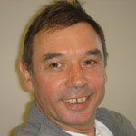 |
Eric Muller
2005
to 2012
Vice President Emeritus
Eric Muller is a software engineer with Adobe Systems, where he works primarily on text layout and font technologies.
He has represented Adobe Systems to the Unicode Consortium since May 2000,
and served as the chair of INCITS/L2 from 2006-2011.
Prior to Adobe Systems, Eric worked for Mainsoft, Digital Equipement (at the Systems Research Center) and Schlumberger (EPS).
He holds an M. Sc. in Computer Science from Stanford University and a Engineering degree from ESIEE (Paris).
Eric was a Technical Director of the
Unicode Consortium from 2005-2007, then a Vice
President until 2012.
|
|
|
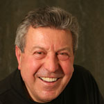 |
Arnold Winkler
1995 to 2002
Unicode Technical Committee (UTC) Vice Chair Emeritus
Intimately familiar with the problems of supporting languages with “strange characters” through his work as
internationalization evangelist in Unisys and its predecessors, Arnold became active in Unicode, INCITS/L2,
and JTC1 SC22/WG20 when he moved to the USA. In all his positions (IR, vice-chair and chair of INCITS/L2,
convenor of SC22/WG20, and vice-chair of the UTC) he promoted the close cooperation of the Unicode Consortium
with the formal national and international standards organizations, thus ensuring that relevant international
standards were based on and compatible with The Unicode Standard. Arnold was involved in the development and
editing of major ISO standards for internationalization and character set technology. He retired end of 2004
and now has the time to enjoy his hobby – digital photography. |
|
|
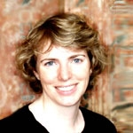 |
Cathy Wissink,
2002 to 2005
Unicode Technical Committee (UTC) Vice Chair EmeritaSince 1991, Cathy has worked on numerous internationalization
projects at Microsoft, including the Win32 NLS API, and the
System. Globalization namespace in the .NET Framework. Cathy has been
involved in implementing Unicode on Windows since version 1.0 was
enabled on Windows NT 3.1, and has participated in the Unicode
Consortium in varied roles. She was Microsoft's primary
representative to the Unicode Technical Committee (UTC), UTC vice
chair, and chair of INCITS/L2. She has published and presented many
white papers and articles on Microsoft-specific
internationalization. |
|
|